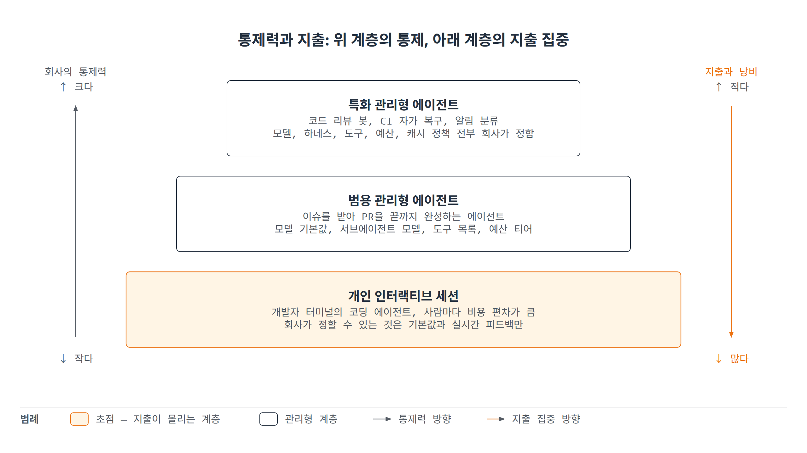
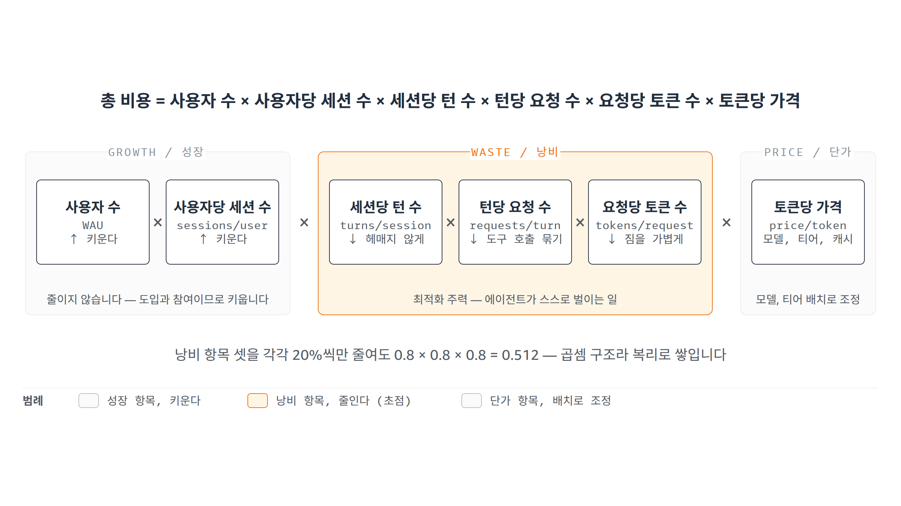
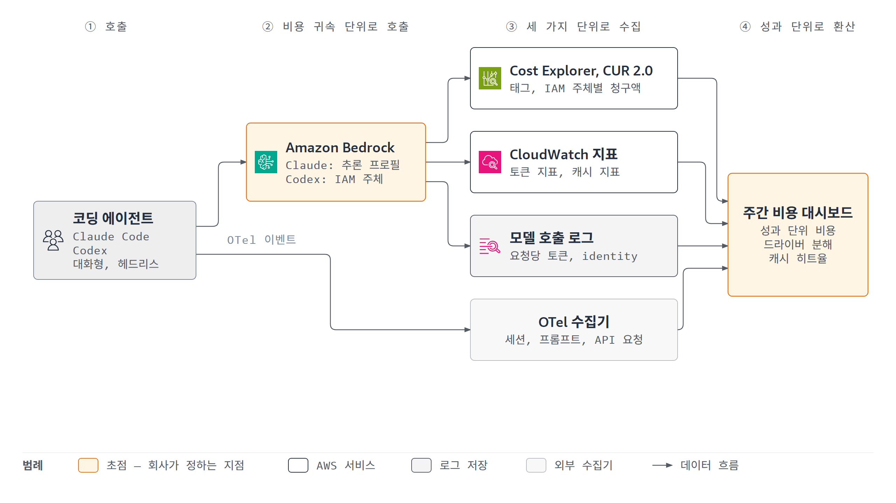
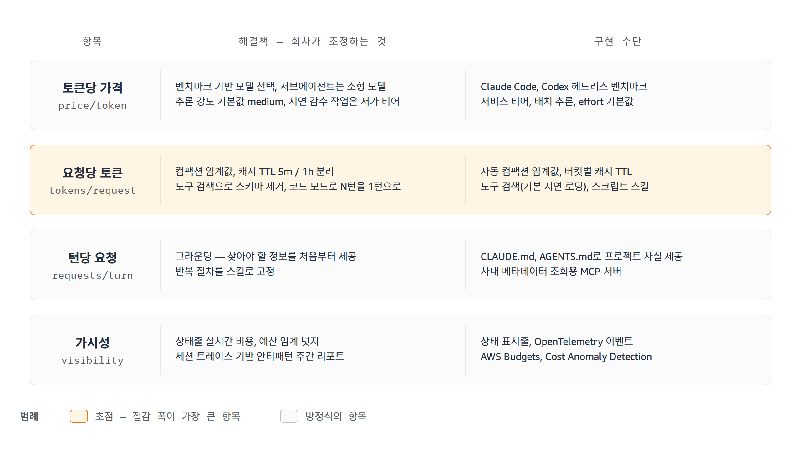
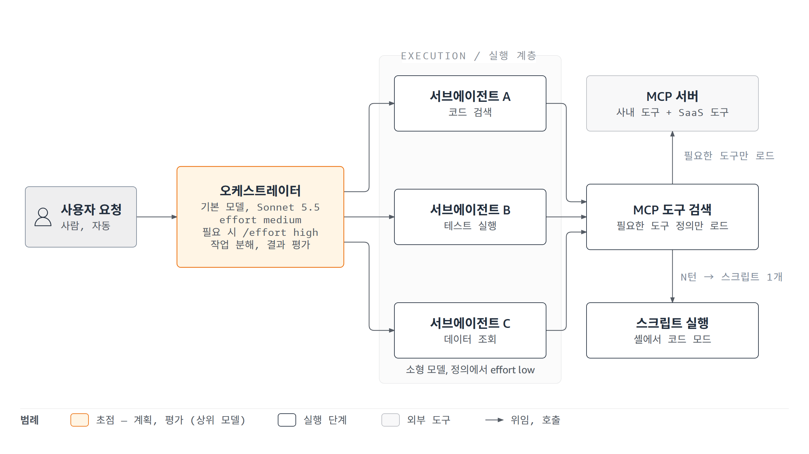
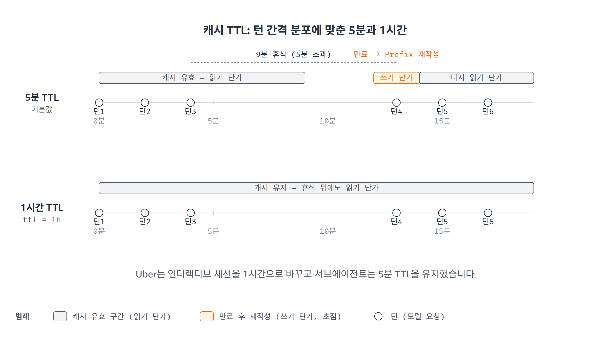
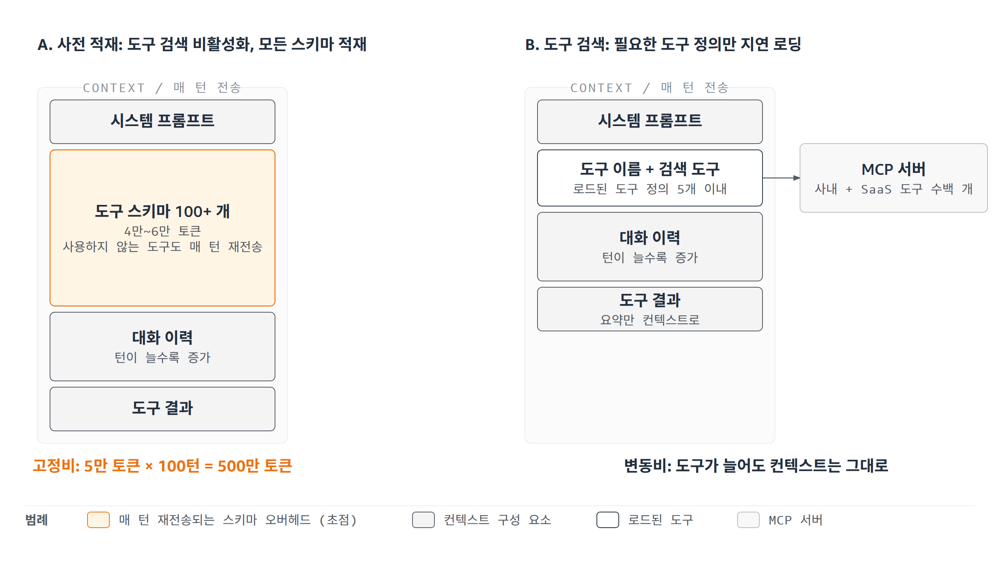
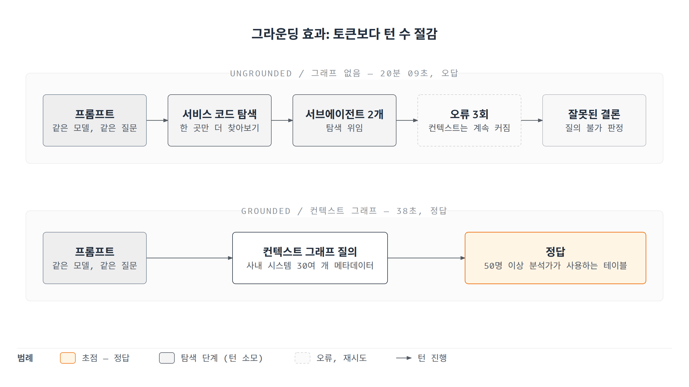
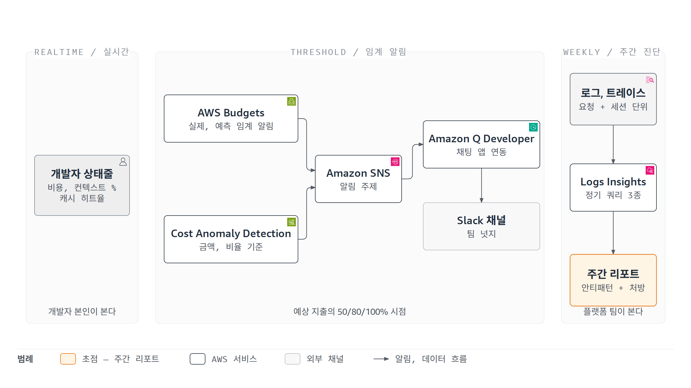
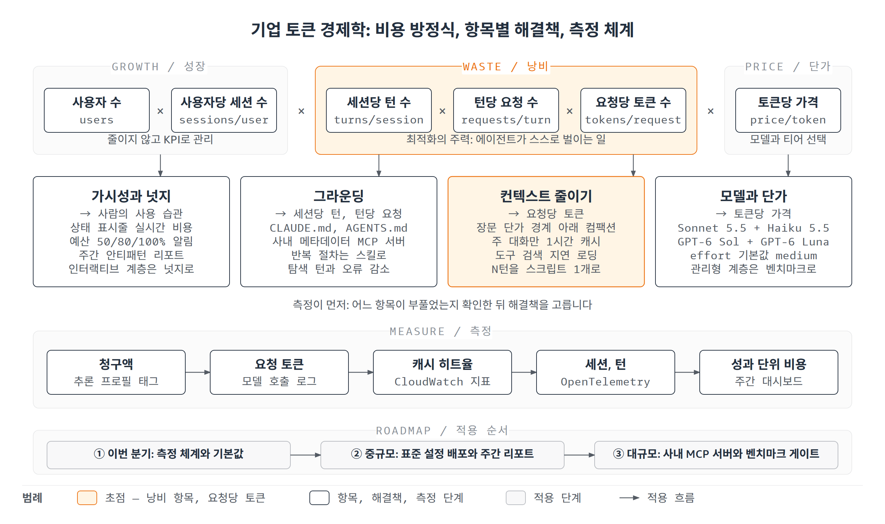

에이전트가 스스로 토큰을 소비할 때 기업은 AI 비용 증가분을 어떻게 설명하고 줄일 것인가를 묻습니다. 비용을 사용자 수부터 토큰당 가격까지 여섯 항목의 곱으로 나누면 성장분과 낭비분이 분리되고 항목마다 해결책이 정해집니다. 해결책은 매 턴 재전송되는 컨텍스트 줄이기, 계획하는 모델과 실행하는 모델의 분리, 그라운딩으로 턴 수 줄이기이며 필요한 측정과 설정은 Amazon Bedrock, Claude Code, Codex에 이미 있습니다.How does an enterprise explain and reduce the growth in its AI bill when agents consume tokens on their own? Breaking cost into a product of six terms, from users to price per token, separates growth from waste and assigns a solution to each term. The solutions are to shrink the context resent on every turn, separate the model that plans from the model that executes, and cut turns with grounding, and the measurement and settings they need already exist in Amazon Bedrock, Claude Code, and Codex.
지난 반년 동안 여러분 조직의 AI 청구서는 몇 배가 되었습니까? 그 증가분에서 사람이 요청한 일과 에이전트가 스스로 벌인 일을 지금 대시보드에서 구분해 볼 수 있습니까?
Claude Code, Codex 같은 코딩 에이전트가 코드 작성과 리뷰, 장애 분류, 데이터 조회를 맡으면서 토큰(token, 모델이 텍스트를 읽고 쓰는 최소 단위)은 CPU 시간이나 데이터 전송량 같은 비용 단위가 되었습니다. 다른 점은 소비의 주체입니다. 서버는 사람이 동작시킨 만큼만 구동되지만 에이전트는 요청 하나 위에 도구 호출과 컨텍스트 재전송을 스스로 더합니다. 그래서 사용량 캡(cap)만으로는 도입 효과와 비용 절감을 함께 놓칩니다. 이 글은 필자가 지난 반년 동안 기업 고객과 토큰 비용을 주제로 나눈 미팅의 경험과 Uber Engineering이 2026년 8월 공개한 운영 사례를 함께 정리했습니다.
01
Uber의 사례로 시작하겠습니다. 2026년 2월부터 8월까지 Uber에서 에이전트 도구의 주간 활성 사용자는 7배, 주간 에이전트 요청은 9.4배 늘었습니다. 전체 PR(pull request)의 70% 이상이 로컬이나 클라우드 에이전트에서 나오고 엔지니어들이 만든 스킬 3,600여 개가 하루 3만 회 이상 실행됩니다. 그런데도 전체 AI 지출은 4월 이후 비교적 안정되었습니다. 모델을 하나로 고정해 비교하면 1,000회 요청당 비용은 피크 대비 약 34%, 세션당 비용은 6월 피크 대비 52% 낮아졌습니다.
눈여겨볼 것은 절감률보다 소비 구조입니다. Uber에서는 코드 리뷰, CI 실패 자가 복구, 온콜 알림 분류처럼 사람이 아니라 관리형 에이전트(managed agent, 목적과 모델과 예산을 회사가 정해 두고 자동으로 실행되는 에이전트)가 시작하는 세션의 비중이 커지고 있습니다. 사람이 직접 의도해서 동작시키는 세션은 그 일부일 뿐입니다. 요청 한 번 뒤에서 에이전트가 수십 번의 모델 호출을 만들기 때문에 토큰 청구서는 더 이상 직원 수에 비례하지 않습니다.
AI 청구서는 한 줄로 오지만 그 안에는 통제력이 다른 계층이 섞여 있습니다. Uber는 에이전트 사용을 가장 특화된 계층부터 가장 범용적인 계층까지 네 계층으로 나누고 위 계층일수록 비용, 품질, 모델 선택을 더 통제할 수 있다고 설명합니다. 이 글은 이를 세 계층으로 줄여 다룹니다. 목적과 입력이 정해진 특화 에이전트는 모델, 예산, 도구를 회사가 모두 정합니다. 개발자가 터미널에서 자유롭게 대화하는 세션은 사람의 습관이 비용을 좌우합니다. 이 계층에서 회사가 손댈 수 있는 것은 기본값과 실시간 피드백 정도입니다.
| 계층 | 예시 | 비용이 새는 지점 | 회사가 정하는 것 |
|---|---|---|---|
| 특화 관리형 에이전트 | PR 리뷰 봇, CI 자가 복구, 알림 분류. 같은 작업을 하루 수천 번 반복 | 작업에 비해 과한 모델을 기본값으로 방치 | 모델, 하네스(harness, 에이전트를 실행하는 프로그램 틀), 도구, 예산, 캐시 정책 전부 |
| 범용 관리형 에이전트 | 이슈를 받아 PR을 완성. 작업마다 턴 수 편차가 큼 | 그라운딩 부족으로 탐색 턴 증가, 서브에이전트의 상위 모델 상속 | 모델 기본값, 도구 목록, 예산 티어, 미리 제공하는 컨텍스트 |
| 개인 인터랙티브 세션 | 개발자 수백 명의 코딩 에이전트. 같은 작업도 사람마다 비용 편차가 큼 | MCP 서버 과다 설치, 자리 비움으로 인한 캐시 만료, 단순 질문에 최상위 모델 사용 | 초기 모델, 서브에이전트 모델, 컴팩션 임계값 같은 기본값과 실시간 비용 표시 |
표 1. 통제력 기준으로 나눈 AI 사용 계층 (Uber의 네 계층 구분을 세 계층으로 단순화)

표와 그림이 보여 주는 역설이 있습니다. 통제력은 아래 계층으로 갈수록 줄어드는데 지출과 낭비는 아래 계층에 몰립니다. 그래서 전략은 두 방향으로 나누는 것을 권장합니다. 관리형 계층은 벤치마크와 모델 선택 루프로 정밀하게 조이고 인터랙티브 계층은 기본값과 넛지(nudge, 강제 없이 행동을 유도하는 장치)로 넓게 덮습니다.
여기서 많은 조직이 개인의 에이전트 사용을 하나씩 통제하려 듭니다. 모델 선택 금지, 도구 설치 승인제, 사용자별 토큰 한도가 대표적입니다. IT 역사에서 이 접근은 여러 번 실패했습니다. 클라우드 초기에 인스턴스마다 티켓 승인을 요구한 조직에서는 개인 카드로 만든 계정, 즉 섀도 IT(shadow IT, 승인 없이 사용하는 IT 자원)가 자랐습니다. 스마트폰 업무 사용을 금지한 조직은 결국 기기를 허용하고 관리하는 BYOD로 방향을 바꿨습니다. 메일함 용량을 빠듯하게 제한한 조직은 로컬 보관에 따른 자료 유실과 규정 위반을 겪었습니다. 개인의 생산성 도구를 통제하면 사용은 줄지 않고 보이지 않는 곳으로 옮겨 갑니다.
에이전트도 같습니다. 인터랙티브 계층에서 회사의 몫은 기본값을 효과적으로 두고 비용을 보이게 하는 데까지입니다. 큰 절감은 반복 작업을 통제력이 큰 관리형 계층으로 옮길 때 나옵니다. Uber도 수천 명의 터미널 세션을 하나씩 최적화하기보다 관리형 에이전트로 옮기는 편이 비용 효율과 확장성이 높다고 결론짓습니다. Claude Code와 Codex는 헤드리스 모드(claude -p, codex exec)로 CI와 봇에서도 실행되므로 같은 도구와 같은 지표로 관리형 계층을 만들 수 있습니다.
02
비용을 곱셈으로 쪼개 항목마다 책임자를 두는 방식은 익숙합니다. 예를 들어 EC2 비용을 인스턴스 수 × 가동 시간 × 시간당 단가로, 매출을 방문자 × 전환율 × 객단가로 나누는 식입니다. 항목이 나뉘면 “비용이 늘었다”는 보고가 “어느 항목이 왜 늘었다”로 바뀝니다. 이 글에서 사용한 여섯 항목 분해와 지표 체계, 항목별 해결책 분류는 Uber Engineering이 2026년 8월 공개한 Running a Software Factory Efficiently at Uber Scale의 틀을 바탕으로 했습니다.
총 비용 = 사용자 수 × 사용자당 세션 수 × 세션당 턴 수 × 턴당 요청 수 × 요청당 토큰 수 × 토큰당 가격세션(session)은 한 작업을 위해 이어지는 대화 단위입니다. 턴(turn)은 사용자 입력 한 번부터 응답 완료까지입니다. 요청(request)은 한 턴 안에서 모델에 보내는 개별 API 호출로, 에이전트가 도구를 한 번 부를 때마다 하나씩 늘어납니다.

여섯 항목은 세 묶음으로 나뉘며 묶음마다 담당과 다루는 방식이 다릅니다.
| 묶음 | 항목 | 국내 기업에서 보이는 모습 | 다루는 방식 |
|---|---|---|---|
| 성장 | 사용자 수, 사용자당 세션 수 | 한 금융사는 전 임직원 AI 활용률을 경영 목표로 걸어 반년 만에 주간 활성 사용자가 3배가 됐습니다 | 줄이지 않고 KPI로 관리합니다. 비용 보고에서 성장분과 낭비분을 분리합니다 |
| 낭비 | 세션당 턴 수, 턴당 요청 수, 요청당 토큰 수 | 한 커머스 기업의 상담 요약 에이전트는 상담 1건에 평균 14턴이 걸렸습니다. 트레이스를 보니 턴마다 같은 주문 정보를 다시 조회했습니다 | 최적화의 주력입니다. 세션 트레이스로 원인을 찾아 그라운딩, 캐싱, 도구 정리로 줄입니다 |
| 단가 | 토큰당 가격 | 한 게임사는 QA 로그 분류까지 최상위 모델로 처리했습니다. 소형 모델로 바꾸자 품질은 그대로였고 단가는 몇 분의 일이 됐습니다 | 작업별 벤치마크로 모델을 고르고 서비스 티어와 배치 추론을 배치합니다 |
표 2. 비용 방정식의 세 묶음과 대응 방식 (국내 기업 사례는 합성 데이터)
곱셈 구조이므로 낭비 항목 셋을 20%씩만 줄여도 곱은 0.8 × 0.8 × 0.8 = 0.512로 절반 가까이 내려갑니다. 성장과 낭비가 한 식 안에서 분리되므로 “AI 사용을 늘리자”와 “AI 비용을 줄이자”도 충돌하지 않습니다. 사용자가 늘어 오른 비용은 예상된 결과이고 요청당 토큰이 부풀어 오른 비용은 고쳐야 할 개선 항목입니다.
03
방정식의 항목은 측정될 때만 관리 대상이 됩니다. 비용 관리가 자리 잡은 기업의 대시보드에는 공통으로 다섯 계층이 있고 계층마다 답하려는 질문이 다릅니다.
| 계층 | 보는 것 | 답하려는 질문 |
|---|---|---|
| 포트폴리오 | 귀속 비용, 고유 사용자 수, 도구별 비용과 점유율 | 돈이 어디로 가고 이번 주에 무엇이 움직였나? |
| 도구별 단위 경제 | 사용자당, 1,000요청당, 세션당 비용, 요청당 토큰, 캐시 히트율 | 도구가 실제로 저렴해지는가? 사용량이 옮겨 갔을 뿐인가? |
| 모델 경제 | 모델별 비용, 요청 점유율, 100만 토큰당 비용 | 어느 모델 출시로 청구서 비용이 달라졌나? |
| 드라이버 분해 | 비용 변동을 사용자, 참여, 입력, 출력 순으로 분해 | 비용 변동의 원인을 요인별로 빠짐없이 설명하는가? |
| 성과 단위 비용 | 머지된 PR당, 리뷰당 비용과 품질(되돌리기 비율, 리뷰 정확도) | 가치 한 단위의 비용이 내려가고 품질은 유지되는가? |
표 3. 토큰 비용을 관리하는 다섯 계층의 지표
경영진 보고에 가장 유용한 것은 드라이버 분해와 성과 단위 비용(outcome-denominated cost)입니다. 이번 달 비용이 40% 늘었다면 사용자 +25%, 사용자당 요청 +5%, 요청당 입력 토큰 +8%, 출력 토큰 -1%로 쪼갭니다. 각 요인을 곱하면 1.25 × 1.05 × 1.08 × 0.99 = 1.40이 되어 성장분과 낭비분이 한 줄로 설명됩니다. 실제 보고에서는 요인별 기여분을 금액으로 차례로 나눠 적어 그 합이 총 변동과 정확히 같아지게 합니다. 성과 단위 비용은 나눗셈 한 번입니다. 코드 리뷰 에이전트의 주간 청구액을 같은 주의 리뷰 수로 나누고 사람이 채택한 코멘트 비율을 옆에 둡니다. 모델을 낮춰 리뷰당 비용이 30% 내려갔는데 채택률이 절반이 되었다면 그 절감은 절감이 아닙니다.
다섯 계층을 채우려면 청구액, 요청 한 건의 토큰 수, 세션 안의 흐름처럼 수집 단위가 서로 다른 데이터가 필요합니다. Amazon Bedrock과 코딩 에이전트 도구는 이를 서로 다른 기능으로 제공하므로 하나만 활성화해서는 표가 채워지지 않습니다.

| 데이터 | 수집 수단 | 수집 단위 | 채우는 지표 |
|---|---|---|---|
| 청구액 | 애플리케이션 추론 프로필과 비용 할당 태그, IAM 주체 귀속 | 일별, 사용 유형별 금액 | 포트폴리오, 모델 경제 |
| 요청 단위 토큰 | 모델 호출 로깅, 요청 메타데이터 태그 | 호출 한 건 | 도구별 단위 경제, 드라이버 분해 |
| 실시간 지표 | AWS/Bedrock 네임스페이스의 CloudWatch 지표 | ModelId,ServiceTier,ResolvedServiceTier 차원 | 캐시 히트율, 스로틀링 경보 |
| 코딩 도구의 세션 | Claude Code, Codex의 OpenTelemetry 내보내기 | 세션, 프롬프트, API 요청 | 세션당 턴, 턴당 요청, 세션 비용 |
표 4. 측정 데이터의 네 가지 원천
추론 프로필 ARN으로 InvokeModel이나 Converse API를 호출하면 프로필의 비용 할당 태그가 AWS Cost Explorer와 CUR 2.0(Cost and Usage Report)으로 이어집니다. 태그는 활성화 이후 비용에만 적용되므로 프로필을 만들자마자 Billing 콘솔에서 태그를 활성화합니다. bedrock-mantle 엔드포인트로 OpenAI 호환 API나 Anthropic Messages API를 호출하는 워크로드는 추론 프로필 대신 Projects와 Workspaces로 태깅합니다.
# 코드 리뷰 에이전트용 추론 프로필을 만들고 비용 할당 태그를 붙입니다
# 리전 안에서 직접 제공되지 않는 모델은 시스템 정의 추론 프로필(global.* 등)의 ARN을 지정합니다
aws bedrock create-inference-profile \
--inference-profile-name "code-review-agent-prod" \
--model-source "copyFrom=<MODEL_OR_SYSTEM_INFERENCE_PROFILE_ARN>" \
--tags key=agent,value=code-review key=env,value=prod key=cost-center,value=platform \
--region ap-northeast-2
# 반환된 inferenceProfileArn을 modelId 대신 사용해 호출합니다모델 호출 로깅은 기본으로 비활성화되어 있어 계정과 리전마다 활성화해야 합니다. 레코드에는 입력, 출력 토큰 수와 호출 주체, modelId가 담기며 requestMetadata에 실어 보낸 팀, 기능 키도 함께 남습니다. bedrock-mantle 엔드포인트 호출은 로깅 대상이 아니므로 해당 워크로드는 Projects 단위 청구액으로 봅니다. 캐시 히트율은 CloudWatch 지표로 CacheReadInputTokenCount ÷ (InputTokenCount + CacheReadInputTokenCount + CacheWriteInputTokenCount)를 계산하고 경보를 걸어 둡니다. 지표 이름이 틀리면 경보가 오류 없이 데이터 부족 상태에 머물므로 지표 목록에서 이름을 먼저 확인합니다.
세션당 턴 수와 턴당 요청 수는 호출 단위 데이터에 없으므로 에이전트가 실행되는 쪽, 즉 Claude Code와 Codex에서 수집합니다. 두 도구 모두 OpenTelemetry 내보내기를 내장하고 있으므로 이를 활성화해 사내 OTel 수집기로 모읍니다. 헤드리스 실행에도 같은 설정이 적용됩니다.
Claude Code는 CLAUDE_CODE_ENABLE_TELEMETRY=1로 텔레메트리를 활성화합니다. 그러면 프롬프트마다 user_prompt, API 호출마다 api_request 이벤트가 나옵니다. 모든 이벤트에 session.id와 prompt.id가 포함되므로 프롬프트 이벤트를 세션 ID로 묶으면 세션당 턴, api_request를 프롬프트 ID로 묶으면 턴당 요청이 나옵니다. Codex CLI는 config.toml의 [otel] 설정으로 codex.user_prompt와 codex.api_request 이벤트를 대화 ID와 함께 내보냅니다. codex.api_request는 재시도를 포함한 시도 단위로 기록되므로 턴당 요청은 성공한 시도나 codex.sse_event의 response.completed 이벤트로 셉니다. 두 도구 모두 프롬프트 원문은 기본적으로 기록하지 않습니다.
LLM 게이트웨이가 여러 사용자를 대신해 호출하면 Bedrock은 게이트웨이의 IAM 역할을 호출자로 기록합니다. Amazon Bedrock 문서에 따르면 청구서에서 사용자별 금액을 보려면 게이트웨이가 사용자마다 RoleSessionName이나 세션 태그로 역할을 맡아야 합니다. 프롬프트 단위 상세만 필요하면 요청 메타데이터에 사용자를 싣는 것으로 충분합니다.
04
측정이 되면 어느 항목이 부풀었는지 보입니다. 해결책은 항목마다 다르며 코드 변경이 가장 적은 단가부터 살펴봅니다.

단가표는 공급자가 정하지만 같은 작업의 토큰당 가격은 회사가 고르는 세 가지로 달라집니다. 어떤 모델에 맡길지, 그 모델을 어떤 서비스 티어로 호출할지, 얼마나 깊게 추론하게 할지입니다. 이 순서대로 살펴봅니다.
어떤 일을 어떤 모델에 맡길지 정하는 출발점은 실제 업무로 만든 벤치마크입니다. Uber는 모든 PR의 AI 코드 리뷰를 맡는 uReview의 벤치마크를 알려진 버그가 든 실제 PR로 만들어 리뷰 정확도와 리뷰당 비용, 지연을 함께 채점합니다. 리뷰 정확도는 지적한 것 가운데 실제 버그의 비율(정밀도)과 실제 버그 가운데 찾아낸 비율(재현율)을 함께 반영하는 F1 점수입니다. Uber에 따르면 모델을 바꾼 뒤 리뷰 정확도는 올라가고 PR당 비용은 크게 내려갔습니다.
Claude Code와 Codex라면 헤드리스 모드(claude -p, codex exec)로 같은 벤치마크 작업을 후보 모델마다 실행하고 결과를 자체 채점 스크립트로 비교합니다. 같은 실행의 OpenTelemetry 이벤트로 완료 작업당 비용을 계산해 CI/CD 게이트에 두면 모델 교체가 배포 절차의 일부가 됩니다. 비교할 때는 한 번에 한 변수만 바꿉니다.
인터랙티브 계층에서 가장 큰 해결책은 서브에이전트(subagent, 주 에이전트가 하위 작업을 위임하는 에이전트)의 기본 모델입니다. 서브에이전트는 입력이 명확한 작업을 맡으므로 프론티어급 추론이 필요 없는 경우가 많습니다. Uber는 서브에이전트의 기본 모델을 더 저렴한 모델로 낮추되 수동 오버라이드는 허용하는 설정이 가장 효과가 큰 해결책이었다고 밝힙니다. 주 모델은 작업 분해와 평가를, 서브에이전트는 실행을 맡습니다.

Amazon Bedrock에서는 오케스트레이터에 Claude Opus 5.5나 Claude Sonnet 5.5를, 서브에이전트에 Claude Haiku 5.5를 둡니다. Claude Code에서는 ANTHROPIC_DEFAULT_HAIKU_MODEL이 haiku 별칭이 가리킬 소형 모델, 곧 Haiku 5.5의 추론 프로필을 정합니다. CLAUDE_CODE_SUBAGENT_MODEL=haiku는 서브에이전트의 기본 모델을 그 별칭으로 내립니다. 서브에이전트 정의의 model 필드나 호출별 모델 지정이 있으면 그쪽이 우선하므로 수동 오버라이드 경로는 남습니다. 다만 호출별 모델은 Claude가 서브에이전트를 띄울 때 넘기는 값이기도 해서 사용자가 요청하지 않아도 Haiku 기본값을 벗어날 수 있습니다. 서브에이전트 요청의 모델 비중은 Claude Code 비용, 토큰 지표의 model과 query_source 속성으로 확인합니다.
내장 Explore와 Plan 서브에이전트는 주 대화 모델을 상속합니다. 이들까지 바꾸려면 CLAUDE_CODE_SUBAGENT_MODEL_FORCE=1이 필요하며 이때는 오버라이드도 막힙니다. 세션 제목 생성 같은 배경 작업은 이와 별개로 Bedrock에서 ANTHROPIC_DEFAULT_HAIKU_MODEL이 없으면 기본 모델이 처리합니다. 두 설정은 각각 한 줄이지만 Global 단가 기준으로 Sonnet 5.5와 Haiku 5.5는 입력과 출력 단가 모두 20배 차이가 납니다.
Codex(GPT 모델)도 같은 방식을 따릅니다. Codex 문서에 따르면 Amazon Bedrock에서 Codex가 지원하는 모델은 GPT-6 Astra, Sol, Luna이며 새 구성에는 Bedrock Runtime 공급자(amazon-bedrock-runtime)를 권장합니다. GPT-6 Sol은 기능 구현, 디버깅, 리팩터링, 코드 리뷰 같은 개발 작업을 위한 모델이고 GPT-6 Luna는 요약, 추출, 분류 같은 대량 작업을 위한 가장 효율적인 모델입니다. 그래서 기본 모델은 global.openai.gpt-6-sol로 지정합니다. 서브에이전트는 [agents]의 default_subagent_model로 global.openai.gpt-6-luna를 지정하고 최상위 모델인 GPT-6 Astra는 설계처럼 어려운 작업에만 고릅니다. Bedrock에는 9월 29일 출시된 GPT-6.1 Sol도 있고 최신 Codex의 모델 목록에도 올라와 있습니다. 입력과 출력 단가는 GPT-6 Sol과 같고 캐시 읽기 단가는 절반입니다.
| 역할 | Claude Code (Claude 5.5) | Codex (GPT-6) |
|---|---|---|
| 어려운 설계와 분석 | Claude Opus 5.5 | GPT-6 Astra |
| 기본 모델 (오케스트레이터) | Claude Sonnet 5.5 | GPT-6 Sol |
| 서브에이전트, 대량 작업 | Claude Haiku 5.5 | GPT-6 Luna |
| 지정 위치 | ANTHROPIC_MODEL,ANTHROPIC_DEFAULT_HAIKU_MODEL,CLAUDE_CODE_SUBAGENT_MODEL | model,[agents]의 default_subagent_model |
| effort 기본값 (API) | Opus 5.5 medium, Sonnet 5.5 high, Haiku 5.5 medium | GPT-6 Sol medium |
| effort 기본값 (도구) | Claude Code는 세 모델 모두 medium | model_reasoning_effort로 지정 |
표 5. Claude Code와 Codex의 모델 분리 (Amazon Bedrock 기준, 2026년 10월)
두 도구 모두 모델 지정 몇 줄만 바꾸면 되므로 실제 절감은 소형 모델로 보내는 작업의 비중에서 나옵니다.
GPT 모델은 같은 모델이라도 호출 경로와 요청 크기에 따라 단가가 달라집니다. GPT-6 Sol 모델 카드에 따르면 Global CRIS(전 세계 교차 리전 추론)는 OpenAI 직접 판매 단가와 같고 Mantle In-Region과 US Geo CRIS에는 10% 할증이 부과됩니다. 서울 리전에서는 Global CRIS로만 호출하므로 할증 없는 단가가 적용됩니다. 입력이 272,000토큰을 넘으면 요청 전체에 장문 단가가 적용되어 입력 단가는 2배, 출력 단가는 1.5배가 됩니다. 그래서 Codex의 자동 컴팩션 임계값은 272K 아래에 둡니다.
Claude Haiku 5.5에도 비슷한 경계가 있습니다. Haiku 5.5 모델 카드에 따르면 10만 토큰을 넘는 프롬프트는 입력, 출력, 캐시 읽기와 쓰기 모두 더 높은 장문 단가로 청구됩니다. Amazon Bedrock 요금표 기준 배율은 5배로 GPT보다 크고 기준선도 훨씬 낮습니다. 10만 토큰을 넘으면 Sonnet 5.5 대비 입력과 출력 단가 절감률이 95%에서 75%로 줄어들므로 서브에이전트 작업은 작게 나눕니다. 정의 파일을 둔 서브에이전트는 정의의 autoCompactWindow로 컴팩션 창을 따로 낮출 수 있습니다. 내장 general-purpose와 Explore 서브에이전트는 주 대화와 같은 창을 사용하므로 작업을 작게 나누는 것이 유일한 대응입니다.
모델을 정했으면 그 모델을 어떤 서비스 티어로 호출할지 고릅니다. 요청에 service_tier 파라미터 하나를 더하면 됩니다.
| 선택지 | 단가 | 맞는 작업 | 제약 |
|---|---|---|---|
| Standard | 기준 단가 | 일반 실시간 요청 | 없음 |
| Flex | Standard 대비 50% 할인 | 모델 평가, 요약, 에이전트 워크 플로우처럼 지연을 감수하는 작업 | 응답 지연 감수 |
| Priority | 75% 프리미엄 | 고객 대면처럼 응답 속도가 중요한 요청 | 없음 |
| 배치 추론 | 50% 할인 | 야간 대량 평가, 분류 | Converse 타입 도구 호출과 프롬프트 캐싱 미지원, 작업별 타임아웃 24~168시간(timeoutDurationInHours) |
표 6. Amazon Bedrock 서비스 티어와 배치 추론의 단가 (티어 지원 여부는 모델 카드에서 확인)
티어 지원은 모델마다 다릅니다. 2026년 10월 현재 Claude Opus 5.5, Sonnet 5.5, Haiku 5.5와 GPT-6 Sol, Luna는 모두 Standard만 지원하므로 Flex와 배치 추론은 이를 지원하는 모델에 맡기는 작업에 적용합니다. 배치 추론은 Converse 호출 타입에서 도구 호출을 지원하지 않고 InvokeModel 네이티브 형식으로만 가능하므로 에이전트 루프를 그대로 옮기기 어렵습니다. 실무에서는 평가와 요약처럼 지연을 감수하는 요청부터 Flex 지원 모델로 보냅니다.
추론(thinking) 토큰은 입력보다 단가가 몇 배 높은 출력 토큰으로 과금됩니다. Uber는 추론 강도 기본값을 medium으로 두었고 상당수 작업에서 비용 대비 품질의 균형점이 여기에 있었다고 밝힙니다. Amazon Bedrock의 Claude 모델은 적응형 사고(adaptive thinking)의 effort 값으로 이 강도를 정하며 API 기본값은 모델마다 다릅니다. Claude Opus 5.5는 적응형 사고가 항상 활성화되어 있어 비활성화할 수 없고 effort 기본값은 medium입니다. Claude Sonnet 5.5는 적응형 사고가 기본으로 활성화되어 있고 effort 기본값이 high입니다. Claude Haiku 5.5는 적응형 사고가 기본이고 effort 기본값이 medium입니다.
Claude Code는 이와 달리 세 모델 모두 medium으로 시작합니다. 회사 기본값을 따로 두려면 관리형 설정의 최상위 effortLevel을 사용합니다. 사용자는 /effort로, 서브에이전트는 정의의 effort 필드로 이 값을 바꿀 수 있으므로 입력이 명확한 서브에이전트 작업은 low로 낮춥니다. 환경 변수 CLAUDE_CODE_EFFORT_LEVEL은 이 모든 오버라이드보다 우선하므로 회사 표준에는 넣지 않습니다.
Amazon Bedrock API에서 GPT-6 Sol의 추론 강도는 none부터 max까지 여섯 단계이고 기본값은 medium입니다. Codex는 단계 체계가 달라 low, medium, high, xhigh, max, ultra를 받고 none은 없습니다. 기본 모델의 강도는 model_reasoning_effort로, 서브에이전트의 강도는 default_subagent_reasoning_effort로 따로 정합니다.
모델은 상태를 기억하지 않으므로 매 턴 대화 이력, 프로젝트 컨텍스트, 도구 결과가 다시 전송됩니다. 세션 시작 때 들고 있는 5만 토큰은 100턴 세션에서 500만 토큰이 됩니다. 요청당 페이로드를 줄이는 조치가 세션 길이만큼 복리로 작용하는 이유입니다.
첫째, 컨텍스트 창은 용량이지 목표가 아닙니다. Uber는 100만 토큰 컨텍스트 모델에서도 40만 토큰에서 자동 컴팩션(compaction, 오래된 대화를 요약해 컨텍스트를 압축하는 것)을 발동시켜 전사 요청당 입력 토큰을 의미 있게 줄였습니다. 이 임계값은 개인 설정에 맡기지 않고 회사가 배포하는 하네스 설정으로 표준화해야 효과가 납니다. Claude Code는 관리형 설정의 최상위 autoCompactWindow로 컴팩션 기준 창을 줄입니다. Codex는 model_auto_compact_token_limit로 임계값을 정하되 GPT 모델은 입력이 272K를 넘으면 장문 단가가 적용되므로 그보다 낮은 25만 토큰으로 둡니다.
둘째, 프롬프트 캐시 TTL(time-to-live, 캐시 유지 시간)은 사람의 휴식 패턴에 맞춥니다. 캐시 읽기는 Opus 5.5와 Sonnet 5.5가 입력 단가의 0.05배, Haiku 5.5가 0.1배인 반면 캐시 쓰기는 세 모델 모두 5분 TTL이 1.25배, 1시간 TTL이 2배입니다. 엔지니어가 세션을 5분 넘게 비우는 일이 잦으면 5분 캐시는 만료되고 Prefix(요청의 앞부분) 전체를 다시 써야 합니다. Uber는 이런 휴식이 잦은 인터랙티브 세션을 1시간 TTL로 바꾸었습니다. 짧은 단일 작업에 집중하는 서브에이전트는 5분 TTL을 유지했습니다.

Claude Code는 캐시 체크포인트를 스스로 배치하므로 사용자가 정할 것은 TTL입니다. Claude Code는 요청을 주 대화(인터랙티브 턴과 -p 실행)와 그 외(서브에이전트, 컴팩션, 세션 제목 생성 등)의 두 버킷으로 나눕니다. ENABLE_PROMPT_CACHING_1H=1은 Bedrock에서도 1시간 TTL을 요청하지만 두 버킷 모두에 적용됩니다. 그래서 Uber와 같은 분리는 버킷별 변수로 지정합니다. 주 대화는 CLAUDE_CODE_PROMPT_CACHE_TTL=1h, 그 외는 CLAUDE_CODE_SUBAGENT_PROMPT_CACHE_TTL=5m로 둡니다. 헤드리스 작업만 실행되는 CI 러너에는 FORCE_PROMPT_CACHING_5M=1을 둡니다. Codex가 사용하는 GPT-6 계열은 캐시 TTL이 30분으로 고정되어 있어 별도 설정이 필요 없습니다. 캐시 히트는 처리량 한도(rate limit)에서 차감되지 않으므로 히트율은 스로틀링 여유와도 직결됩니다.
셋째, MCP 도구 스키마를 컨텍스트에 미리 싣지 않습니다. MCP(Model Context Protocol, 에이전트가 외부 도구를 발견하고 호출하는 개방형 프로토콜) 도구 정의는 생각보다 무겁습니다. Uber에 따르면 도구 100개 이상을 설치한 환경에서 표준 MCP 방식의 사전 적재만으로 첫 프롬프트에 약 5만~7만 토큰이 더해졌고 이 고정비가 매 턴 다시 전송됐습니다. Claude Agent SDK 문서도 도구 50개의 정의가 1만~2만 토큰을 차지하며 한 번에 30~50개를 넘게 실으면 도구 선택 정확도가 떨어진다고 설명합니다.
Claude Code는 Anthropic API나 Amazon Bedrock에 직접 연결하면 도구 검색(tool search)이 기본으로 활성화됩니다. 도구 정의를 미리 싣지 않고 컨텍스트에는 도구 이름과 검색 도구만 남기며 필요한 도구 정의는 검색할 때마다 다섯 개까지 불러옵니다. 그래서 Bedrock 직접 연결에서는 아무것도 설정하지 않는 것이 지연 로딩입니다. 사정이 달라지는 것은 ANTHROPIC_BASE_URL로 사내 LLM 게이트웨이나 프록시를 거칠 때입니다. 대부분의 프록시가 지연 로딩에 필요한 도구 참조 블록을 전달하지 못하므로 Claude Code는 사전 적재로 돌아갑니다. 이때 지연 로딩을 유지하려면 ENABLE_TOOL_SEARCH=true를 설정합니다. 게이트웨이가 도구 참조 블록을 전달하지 않으면 요청이 실패하므로 지원 여부를 먼저 확인합니다. Bedrock 형식 게이트웨이(CLAUDE_CODE_USE_BEDROCK=1과 ANTHROPIC_BEDROCK_BASE_URL)는 도구 검색이 기본으로 유지되므로 설정을 바꾸지 않습니다. 대신 이 게이트웨이는 anthropic_beta와 anthropic_version 본문 필드를 그대로 전달해야 합니다. auto:N 값은 반대로 도구 정의가 컨텍스트의 N% 미만이면 미리 싣는 임계 모드라서 도구 스키마를 미리 싣지 않으려는 목적에는 맞지 않습니다.

넷째, N번의 턴을 스크립트 하나로 바꿉니다. 표준 도구 호출은 동작마다 모델 턴이 필요합니다. Uber의 예에서는 SQL 한 건도 제출, 상태 폴링 2~5회, 결과 조회를 거칩니다. 코드 모드(code mode)는 이 흐름을 코드 루프로 묶어 중간 폴링을 컨텍스트 밖에 두고 요약만 돌려받습니다. Uber가 같은 Claude Code 세션에서 같은 SQL 쿼리를 두 경로로 측정했더니 1행짜리 결과에서도 코드 모드의 토큰이 절반 넘게 줄었습니다. N턴이 스크립트 하나가 되는 대량 작업에서는 절감률이 90%를 넘었습니다. Claude Code와 Codex는 셸에서 스크립트를 직접 실행하므로 별도 실행 환경 없이 이 방식을 적용합니다. Uber는 가장 많이 사용하는 MCP 서버를 위한 코드 모드 스킬(skill, 에이전트가 재사용하는 절차 정의)을 25개 넘게 미리 만들어 표준 워크 플로우가 가장 저렴한 경로를 기본으로 타게 했습니다.
그라운딩되지 않은 에이전트는 저렴하게 실패하지 않고 천천히 고비용으로 실패합니다. 커지는 컨텍스트를 매번 다시 보내며 “한 곳만 더 찾아보는” 일을 반복하기 때문입니다. Uber가 공개한 비교 실험에서 사내 시스템 30여 개의 메타데이터를 통합한 컨텍스트 그래프를 조회한 에이전트는 50명 이상의 분석가가 사용하는 테이블을 찾아 38초 만에 정답을 냈습니다. 그래프가 없는 에이전트는 20분 동안 코드를 뒤지며 서브에이전트 2개를 띄우고 오류 3번을 겪은 끝에 잘못된 결론에 도달했습니다. 그라운딩은 토큰 절약이 아니라 턴당 요청 절약입니다.

Uber의 그래프는 2,400만 노드 규모의 투자지만 원리는 어느 조직에나 적용됩니다. 에이전트가 매번 다시 찾는 정보를 처음부터 전달하면 됩니다. Claude Code는 CLAUDE.md, Codex는 AGENTS.md를 세션 시작 때 읽으므로 빌드 명령, 디렉터리 구조, 자주 조회하는 테이블 같은 사실을 여기에 적어 둡니다. 이 파일은 매 요청에 함께 실리므로 짧게 유지하는 것이 좋습니다. 서비스 카탈로그, 테이블 사용 이력, 배포 기록 같은 사내 메타데이터는 조회용 MCP 서버로 노출해 에이전트가 코드를 뒤지는 대신 한 번의 질의로 답을 얻게 합니다. 효과는 OpenTelemetry 이벤트의 턴당 요청 수와 세션당 도구 오류 수로 확인합니다.
Uber는 엄격한 캡 대신 실시간 추적과 자동 넛지를 택했습니다. 하네스 상태 표시줄에 세션 비용을 항상 띄웁니다. 예산은 도구별로 쪼개지 않고 인터랙티브 하네스 전체가 공유하는 티어 하나로 운영하며 관리형 에이전트는 별도 티어로 둡니다. 예상 지출의 50%, 80%, 100% 시점에 Slack 알림이 가고 매니저 승인으로 티어를 빠르게 올립니다. 엔지니어가 ROI를 스스로 판단하게 두면서 대규모 지출만 막는 설계입니다.
AWS에서는 이 구조를 주기가 다른 세 계층으로 만듭니다. 세션 중에는 실시간 비용을 보여 주고 하루 몇 차례 예산 임계 알림을 보내며 매주 안티패턴 리포트로 원인과 처방을 찾습니다.

상태 표시줄은 널리 사용되는 코딩 에이전트에서 설정 한 번으로 활성화됩니다. Claude Code는 ~/.claude/settings.json의 statusLine에 셸 명령을 등록하면 세션 데이터를 JSON으로 표준 입력(stdin)에 넘겨 줍니다. 아래 스크립트는 이 JSON에서 세션 누적 비용, 컨텍스트 사용률, 캐시 히트율을 꺼내 한 줄로 출력합니다. 전체 필드는 Claude Code 문서에 있습니다. 표시 비용은 정가 기준 클라이언트 추정치이므로 실제 청구는 Bedrock 측정으로 확인합니다. 컴팩션 창을 따로 설정해도 used_percentage는 모델의 전체 컨텍스트 창을 기준으로 계산되므로 ctx 값을 컴팩션까지 남은 양으로 읽지 않습니다.
#!/bin/bash
# ~/.claude/statusline.sh
# 등록: ~/.claude/settings.json 에 "statusLine": {"type": "command", "command": "~/.claude/statusline.sh"}
input=$(cat)
MODEL=$(echo "$input" | jq -r '.model.display_name')
CTX=$(echo "$input" | jq -r '.context_window.used_percentage // 0' | cut -d. -f1)
COST=$(echo "$input" | jq -r '.cost.total_cost_usd // 0')
HIT=$(echo "$input" | jq -r '((.prompt_cache.hit_ratio // 0) * 100) | floor')
printf '[%s] ctx %s%% | $%.2f | cache %s%%\n' "$MODEL" "$CTX" "$COST" "$HIT"Codex CLI는 /statusline 피커에서 모델과 추론 강도, 컨텍스트 사용률, 토큰 누계, 사용 한도 같은 내장 항목을 고르면 config.toml의 tui.status_line에 저장됩니다. 비용 항목은 아직 내장되어 있지 않으므로 Codex 사용자에게는 Bedrock 측 예산 알림으로 비용을 보이게 하는 편이 현실적입니다.
AWS Budgets는 추론 프로필의 비용 할당 태그 단위로 실제 지출과 예측 지출에 임계 알림을 겁니다. 알림은 Amazon SNS 토픽으로 보냅니다. 이 토픽을 Amazon Q Developer in chat applications(SNS 알림을 Slack 같은 채팅 채널로 전달하는 서비스)로 Slack 채널에 연결하면 Uber의 50%, 80%, 100% 넛지와 같은 구조가 됩니다. Budgets 데이터는 하루 최대 세 번 갱신되므로 세션 단위 반응은 실시간 비용 계층이 맡습니다. 예산 안에서 벌어지는 급증은 AWS Cost Anomaly Detection이 잡습니다.
다만 AWS Budgets의 예측 지출 알림은 약 5주의 사용 데이터가 쌓여야 만들어지고 태그는 활성화 이후 비용에만 적용되므로 프로필과 태그를 새로 만든 팀은 처음 몇 주 동안 실제 지출 기준 알림만 받습니다. AWS Organizations를 사용한다면 비용 할당 태그 단위의 이상 탐지 모니터는 관리 계정에서만 만들 수 있습니다.
상태 표시줄과 예산 알림은 총액만 보여 주므로 원인과 처방을 알려 주는 계층이 따로 필요합니다. Uber가 공개한 사례에서는 세션 분석 대시보드가 모든 세션 트레이스에서 16가지 안티패턴을 찾아 재무 영향과 처방을 붙입니다. 대표적인 범주는 네 가지입니다.
안티패턴은 모델 호출 로그와 코딩 도구의 OpenTelemetry 이벤트에 주간 쿼리를 거는 것으로 시작합니다. 요청당 입력 토큰이 임계를 넘는 세션, 캐시 쓰기가 읽기를 압도하는 사용자, 단순 세션의 최상위 모델 비율만 뽑아도 네 범주 가운데 셋이 잡힙니다.
앞의 해결책 가운데 도구 설정으로 구현되는 것을 Claude Code와 Codex 각각 한 장으로 모았습니다. Claude Code는 관리형 설정 파일(managed-settings.json)로 배포하면 개인 설정보다 우선합니다.
{
"effortLevel": "medium",
"autoCompactWindow": 400000,
"env": {
"CLAUDE_CODE_USE_BEDROCK": "1",
"AWS_REGION": "ap-northeast-2",
"ANTHROPIC_MODEL": "<SONNET_5_5_PROFILE_ARN>",
"ANTHROPIC_DEFAULT_HAIKU_MODEL": "<HAIKU_5_5_PROFILE_ARN>",
"CLAUDE_CODE_SUBAGENT_MODEL": "haiku",
"CLAUDE_CODE_PROMPT_CACHE_TTL": "1h",
"CLAUDE_CODE_SUBAGENT_PROMPT_CACHE_TTL": "5m",
"CLAUDE_CODE_ENABLE_TELEMETRY": "1",
"OTEL_METRICS_EXPORTER": "otlp",
"OTEL_LOGS_EXPORTER": "otlp",
"OTEL_EXPORTER_OTLP_PROTOCOL": "grpc",
"OTEL_EXPORTER_OTLP_ENDPOINT": "<OTEL_COLLECTOR_URL>"
}
}JSON에는 주석을 달 수 없으므로 줄마다 어떤 해결책을 구현하는지 표로 정리합니다.
| 설정 | 값 | 구현하는 해결책 | 주의할 점 |
|---|---|---|---|
effortLevel | medium | 추론 강도 기본값 | 사용자는 /effort, 서브에이전트는 정의의 effort로 바꿀 수 있음. CLAUDE_CODE_EFFORT_LEVEL은 오버라이드를 모두 막으므로 넣지 않음 |
ANTHROPIC_MODEL | Sonnet 5.5 추론 프로필 ARN | 기본 모델과 비용 할당 태그 귀속 | bedrock:GetInferenceProfile 권한 필요 |
ANTHROPIC_DEFAULT_HAIKU_MODEL | Haiku 5.5 추론 프로필 ARN | haiku 별칭과 배경 작업의 소형 모델 | 지정하지 않으면 배경 작업도 기본 모델이 처리 |
CLAUDE_CODE_SUBAGENT_MODEL | haiku | 서브에이전트 기본 모델 하향 | 정의의 model이 우선. Explore, Plan까지 바꾸려면 CLAUDE_CODE_SUBAGENT_MODEL_FORCE=1 |
autoCompactWindow | 400000 | 컴팩션 임계값 | 사용자의 /autocompact로는 바뀌지 않고 실행별 --autocompact만 우선. Haiku 5.5 서브에이전트는 정의의 autoCompactWindow로 따로 낮춤.환경 변수 CLAUDE_CODE_AUTO_COMPACT_WINDOW는 이 필드를 무효로 만들므로 넣지 않음 |
CLAUDE_CODE_PROMPT_CACHE_TTL,CLAUDE_CODE_SUBAGENT_PROMPT_CACHE_TTL | 1h, 5m | 주 대화만 1시간 캐시 | CI 러너에는 FORCE_PROMPT_CACHING_5M=1 |
CLAUDE_CODE_ENABLE_TELEMETRY,OTEL_* | 1, otlp, grpc | 세션당 턴, 턴당 요청 수집 | 프로토콜 기본값이 없어 빠뜨리면 전송되지 않으므로 수집기에 맞춰 grpc 또는 http/protobuf로 지정. 프롬프트 원문은 기본적으로 기록하지 않음 |
ENABLE_TOOL_SEARCH | 넣지 않음 | 도구 검색 지연 로딩 | Bedrock 직접 연결과 Bedrock 형식 게이트웨이는 미설정이 지연 로딩(게이트웨이는 anthropic_beta 본문 필드 전달). ANTHROPIC_BASE_URL 게이트웨이일 때만 true |
표 7. Claude Code 회사 표준 설정의 줄별 설명 (Claude Code 2.1.296 기준)
ANTHROPIC_MODEL에 애플리케이션 추론 프로필 ARN을 지정하면 Claude Code는 bedrock:GetInferenceProfile로 ARN 뒤의 기반 모델을 확인합니다. 이 권한과 bedrock:ListInferenceProfiles가 빠지면 세션마다 첫 요청이 거부된 뒤 200K 창과 effort가 빠진 요청으로 이어지므로 IAM 정책에 반드시 포함합니다. Bedrock API 키(AWS_BEARER_TOKEN_BEDROCK)로 배포할 때 특히 빠지기 쉽습니다. 권한에 기대지 않으려면 ANTHROPIC_MODEL에는 모델 ID를 두고 modelOverrides로 ARN을 매핑합니다.
Codex는 ~/.codex/config.toml 한 장에 같은 기본값을 설정 키로 고정합니다. model_provider = "amazon-bedrock-runtime"으로 Amazon Bedrock의 OpenAI 모델을 사용하면 공급자 설정도 같은 파일에서 관리됩니다. 이 Runtime 경로는 모델 호출 로깅을 지원하지만 Responses API에서는 애플리케이션 추론 프로필을 사용할 수 없으므로 비용 귀속은 IAM 주체 단위로 합니다. Runtime 공급자는 호스팅 웹 검색을 스스로 제외하므로 웹 검색 설정은 따로 두지 않습니다.
# ~/.codex/config.toml (하네스 래퍼가 배포하는 회사 표준 기본값)
model_provider = "amazon-bedrock-runtime" # Bedrock Runtime, 교차 리전 추론
model = "global.openai.gpt-6-sol" # 기본 모델 (Global CRIS 추론 프로필)
model_context_window = 272000 # 기본 창을 명시해 장문 단가 구간 진입 방지
model_auto_compact_token_limit = 250000 # 272K 아래에서 자동 컴팩션
model_reasoning_effort = "medium" # 추론 강도 기본값
[agents]
default_subagent_model = "global.openai.gpt-6-luna" # 서브에이전트 기본 모델
default_subagent_reasoning_effort = "low"
[otel] # 세션당 턴, 턴당 요청 수집
log_user_prompt = false
exporter = { otlp-http = { endpoint = "<OTEL_COLLECTOR_URL>/v1/logs", protocol = "binary" } }05
측정 없이 최적화를 시작하면 무엇이 효과를 냈는지 알 수 없습니다. 규모와 무관하게 측정부터 시작하고 해결책은 플랫폼 팀의 역량에 맞춰 늘려 가는 것을 권고드립니다.
| 단계 | 먼저 할 일 | 구현 수단 |
|---|---|---|
| 모든 조직 (이번 분기) | 여섯 항목 지표 정의, 서브에이전트 기본 모델 하향, 캐시 히트율 측정, 코딩 도구 OpenTelemetry 활성화, MCP 서버 점검, 추론 강도 기본값 검토 | 추론 프로필과 비용 할당 태그, 모델 호출 로깅, CloudWatch 경보, AWS Budgets |
| 플랫폼 팀이 있는 중규모 | 반복 도구 워크 플로우의 코드 모드 스킬 전환, 안티패턴 주간 리포트, 성과 단위 비용 정의 | 관리형 설정 배포(managed-settings.json, config.toml), OTel 수집기, CloudWatch Logs Insights, 캐시 TTL 분리 |
| 대규모 | 사내 메타데이터 MCP 서버 구축, 게이트웨이 경로의 도구 검색 정책, 헤드리스 에이전트별 벤치마크와 모델 선택 루프 | 헤드리스 벤치마크(claude -p, codex exec) CI/CD 게이트, 추론 프로필별 예산, 서비스 티어 정책 |
표 8. 조직 규모별 적용 순서와 구현 수단
첫 단계는 대부분 설정 변경입니다. 서브에이전트 모델과 추론 강도는 설정 파일 한 줄, 캐시 히트율은 CloudWatch 지표의 나눗셈입니다. 이 단계의 측정치가 다음 단계에서 무엇을 코드 모드로 옮기고 어떤 에이전트에 벤치마크를 먼저 붙일지 정하는 근거가 됩니다.
06
사례와 수치를 자기 조직에 옮기기 전에 여덟 가지를 확인하는 것을 권고드립니다.
| 항목 | 주의할 점 | 대응 |
|---|---|---|
| 총비용 곡선 | Uber의 “지출 안정화”는 비용이 사용량보다 완만하게 늘었다는 뜻입니다. 단위 비용 절감률은 모델을 고정한 조건의 값입니다 | 총액과 단위 비용을 따로 보고 |
| 1시간 캐시 TTL | 1시간 캐시 쓰기는 입력 단가의 2배(5분은 1.25배)라 턴 간격이 대부분 5분 이내면 오히려 손해입니다 | OpenTelemetry 이벤트로 턴 간격 분포를 먼저 확인하고 서브에이전트는 5분 유지 |
| medium 추론 기본값 | 어려운 설계, 디버깅 작업에서는 품질이 떨어질 수 있습니다 | 관리형 effortLevel로 두어 오버라이드 경로를 열고 헤드리스 벤치마크 점수로 확인 |
| 코드 모드 절감률 | Uber 측정의 넓은 테이블 조회처럼 거의 100%에 이르는 극단 사례는 평균이 아닙니다 | 소형 결과셋 기준 50~70%대로 기대 |
| 인프라 전제 | 사내 컨텍스트 저장소와 대규모 MCP 서버 운영에는 전담 플랫폼 팀이 필요합니다 | CLAUDE.md, AGENTS.md와 작은 MCP 서버부터 시작 |
| AWS 기능 제약 | 비용 할당 태그는 활성화 이후 비용만, 호출 로깅은 bedrock-runtime만, 배치 추론은 캐싱과 도구 호출 미지원 | Models at a glance에서 모델, 리전 지원 확인 |
| Claude 5.5 모델 | Opus 5.5, Sonnet 5.5, Haiku 5.5는 Standard 티어만 지원합니다. AWS Marketplace로 과금되어 Cost Explorer에서 모델 제공자 항목으로 표시되며 서울 리전에서는 Global 교차 리전 추론으로만 제공됩니다 | 비용 대시보드의 서비스 필터와 데이터 상주 요건 점검, 태그 활성화 뒤 첫 청구 주기에 Marketplace 청구 항목의 태그별 집계 확인 |
| 추론 프로필 ARN 지정 | bedrock:GetInferenceProfile 권한이 없으면 세션마다 첫 요청이 거부되고 200K 창, effort 미전송 상태로 이어집니다 | IAM 정책에 권한을 포함하거나 modelOverrides로 매핑 |
표 9. 사례를 옮기기 전에 확인할 여덟 가지
Uber도 밝히듯 수치는 각 회사 환경에 특화된 값이고 보편적인 것은 방법론입니다.
07
기업의 토큰 청구서는 앞으로도 매달 늘어날 것입니다. 과제는 그 증가분을 설명할 수 있어야 한다는 것입니다. 드라이버 분해를 거치면 청구서의 배수는 “사용자 증가”와 “요청당 토큰 증가”로 분기됩니다. 사람이 요청한 토큰과 에이전트가 스스로 소모한 토큰의 구분은 성장 항목과 낭비 항목의 구분과 같습니다. 이 두 가지를 대시보드에서 보려면 추론 프로필의 비용 할당 태그, 호출 로그의 요청 단위 토큰, 코딩 도구의 OpenTelemetry 세션 이벤트를 한 파이프라인으로 연결해야 합니다.

정리하면 세 가지입니다. 매 턴 다시 전송되는 컨텍스트에서 일하지 않는 토큰을 빼는 것이 최적화의 절반 이상입니다. 계획하는 모델과 실행하는 모델을 나누는 것이 가장 저렴한 해결책입니다. 그라운딩은 턴 수를 줄여 비용을 낮춥니다. 이 구조의 구성요소들은 이미 갖춰져 있습니다. Claude Code와 Codex에는 서브에이전트 모델, 컴팩션, 도구 검색, 상태 표시줄, OpenTelemetry 설정이 있고 Amazon Bedrock에는 비용 추적, 호출 로깅, 프롬프트 캐싱, 예산 알림이 있습니다. 이 글에서 정리한 비용 방정식과 지표가 조직의 AI 비용 구조를 설계하는 분들께 실질적인 참고가 되기를 바랍니다.
본문의 할인율과 기능 지원 범위는 2026년 10월 기준 공개 문서를 바탕으로 했으며 모델과 리전에 따라 다를 수 있습니다. Uber의 수치는 2026년 8월 공개된 원문을 인용했고 국내 기업 사례의 수치는 여러 고객 미팅의 패턴을 합성한 예시입니다. Claude Code 설정의 동작은 Claude Code 2.1.296 기준입니다.
By what multiple has your organization's AI bill grown over the past six months? Can your dashboard today separate, within that increase, the work people asked for from the work agents started on their own?
As coding agents such as Claude Code and Codex take on code writing and review, incident triage, and data lookups, the token (the smallest unit a model reads and writes text in) has become a unit of cost like CPU time or data transfer. What differs is who does the consuming. A server runs only as much as a person tells it to, but an agent adds tool calls and context retransmission of its own on top of a single request. That is why usage caps alone miss both the benefit of adoption and the cost savings. This post brings together what I learned in meetings on token cost with enterprise customers over the past six months and the operational case study that Uber Engineering published in August 2026.
01
Let's start with Uber. From February to August 2026, weekly active users of agent tools at Uber grew 7x and weekly agent requests grew 9.4x. More than 70% of all pull requests (PRs) come from local or cloud agents, and the 3,600-plus skills that engineers built run more than 30,000 times a day. Even so, total AI spend has been relatively stable since April. With the model held constant for comparison, cost per 1,000 requests fell about 34% from its peak and cost per session fell 52% from its June peak.
The consumption structure deserves more attention than the savings rate. At Uber, a growing share of sessions is started not by people but by managed agents (agents that run automatically with a purpose, model, and budget set by the company), as in code review, CI failure self-repair, and on-call alert triage. Sessions that a person deliberately starts are only part of the total. Because an agent makes dozens of model calls behind a single request, the token bill no longer scales with headcount.
The AI bill arrives as a single line, but it mixes layers with different degrees of control. Uber divides agent usage into four layers, from the most specialized to the most general, and explains that the higher the layer, the more control it has over cost, quality, and model choice. This post condenses them into three. For specialized agents with a fixed purpose and input, the company decides the model, the budget, and the tools. In sessions where developers chat freely in the terminal, individual habits drive the cost. In this layer, about all the company can touch is the defaults and real-time feedback.
| Layer | Examples | Where cost leaks | What the company decides |
|---|---|---|---|
| Specialized managed agents | PR review bots, CI self-repair, alert triage. The same task repeated thousands of times a day | A model too large for the task left as the default | Everything: model, harness (the program framework that runs the agent), tools, budget, cache policy |
| General-purpose managed agents | Takes an issue and completes a PR. Turn counts vary widely by task | More exploration turns from weak grounding, subagents inheriting the top-tier model | Default model, tool list, budget tier, context provided up front |
| Individual interactive sessions | Coding agents for hundreds of developers. Cost varies widely by person for the same task | Too many MCP servers installed, cache expiry from stepping away, the top-tier model used for simple questions | Defaults such as the initial model, subagent model, and compaction threshold, plus a real-time cost display |
Table 1. AI usage layers by degree of control (Uber's four layers simplified to three)
The table and the figure show a paradox. Control shrinks as you move down the layers, yet spend and waste concentrate in the lower layers. For that reason, I recommend splitting the strategy in two directions. Tighten the managed layers precisely with benchmarks and a model selection loop, and cover the interactive layer broadly with defaults and nudges (mechanisms that steer behavior without forcing it).
At this point, many organizations try to control each individual's agent usage one by one. Bans on model selection, approval gates for tool installation, and per-user token limits are typical examples. In the history of IT, this approach has failed more than once. In the early days of the cloud, organizations that required a ticket approval for every instance saw accounts opened on personal credit cards, that is, shadow IT (IT resources used without approval), take root. Organizations that banned smartphones for work eventually changed course to BYOD, allowing and managing the devices. Organizations that capped mailbox sizes tightly ended up with data loss and compliance violations from local archiving. When you control individual productivity tools, usage does not shrink. It moves out of sight.
Agents are no different. In the interactive layer, the company's job goes only as far as setting effective defaults and making cost visible. The big savings come when repetitive work moves into the managed layers, where control is greater. Uber also concludes that moving work to managed agents is more cost-efficient and scalable than optimizing thousands of terminal sessions one at a time. Claude Code and Codex also run in CI and bots in headless mode (claude -p, codex exec), so you can build the managed layers with the same tools and the same metrics.
02
Breaking cost into a product and assigning an owner to each term is a familiar practice. For example, EC2 cost splits into instance count × running hours × hourly rate, and revenue into visitors × conversion rate × average order value. Once the terms are separated, a report that says "cost went up" becomes "this term went up, and here is why." The six-term decomposition, the metric hierarchy, and the classification of solutions by term used in this post are based on the framework in Running a Software Factory Efficiently at Uber Scale, which Uber Engineering published in August 2026.
Total cost = users × sessions per user × turns per session × requests per turn × tokens per request × price per tokenA session is the unit of conversation that continues for a single task. A turn runs from one user input to the completed response. A request is an individual API call sent to the model within a turn, and the count goes up by one each time the agent calls a tool.
The six terms fall into three groups, and each group has a different owner and a different way of being handled.
| Group | Terms | What it looks like at Korean companies | How to handle it |
|---|---|---|---|
| Growth | Users, sessions per user | A financial services company made company-wide AI adoption a management goal, and weekly active users tripled in six months | Manage it as a KPI instead of cutting it. Separate growth from waste in cost reports |
| Waste | Turns per session, requests per turn, tokens per request | A commerce company's support-summary agent took an average of 14 turns per case. The traces showed it looking up the same order information again on every turn | The main target of optimization. Find the cause in session traces and reduce it with grounding, caching, and tool cleanup |
| Unit price | Price per token | A game company used the top-tier model even for QA log classification. After switching to a small model, quality held and the unit price fell to a fraction | Choose models with per-task benchmarks, then place service tiers and batch inference |
Table 2. The three groups of the cost equation and how to respond (the Korean company examples are synthetic data)
Because the structure is multiplicative, cutting each of the three waste terms by just 20% brings the product down to 0.8 × 0.8 × 0.8 = 0.512, close to half. And because growth and waste are separated within one equation, "let's use more AI" and "let's cut AI cost" no longer conflict. Cost that rose because users grew is an expected result, and cost that rose because tokens per request ballooned is an item to fix.
03
The terms of the equation become manageable only when they are measured. Dashboards at companies where cost management has taken hold share five layers, and each layer answers a different question.
| Layer | What you look at | The question it answers |
|---|---|---|
| Portfolio | Attributed cost, unique users, cost and share by tool | Where is the money going, and what moved this week? |
| Per-tool unit economics | Cost per user, per 1,000 requests, and per session, tokens per request, cache hit rate | Is the tool really getting cheaper? Or did usage just shift? |
| Model economics | Cost by model, request share, cost per million tokens | Which model launch changed the cost on the bill? |
| Driver decomposition | Cost change broken down in order by users, engagement, input, and output | Do the factors fully explain the cost change, with nothing left over? |
| Outcome-denominated cost | Cost per merged PR and per review, with quality (revert rate, review accuracy) | Is the cost of one unit of value falling while quality holds? |
Table 3. Five layers of metrics for managing token cost
The two most useful layers for executive reporting are driver decomposition and outcome-denominated cost. If cost rose 40% this month, break it into users +25%, requests per user +5%, input tokens per request +8%, and output tokens -1%. Multiplying the factors gives 1.25 × 1.05 × 1.08 × 0.99 = 1.40, which explains growth and waste on a single line. In an actual report, write each factor's contribution as an amount, one after another, so that the sum matches the total change exactly. Outcome-denominated cost is a single division. Divide the code review agent's weekly bill by the number of reviews in the same week, and put the share of comments that people accepted next to it. If a cheaper model cut cost per review by 30% but the acceptance rate fell by half, that saving is not a saving.
Filling in the five layers takes data collected at different granularities: billed amounts, token counts for a single request, and the flow within a session. Amazon Bedrock and the coding agent tools provide these through separate features, so turning on only one of them will not fill in the table.
| Data | How it is collected | Granularity | Metrics it fills in |
|---|---|---|---|
| Billed amount | Application inference profiles with cost allocation tags, IAM principal attribution | Amount by day and by usage type | Portfolio, model economics |
| Per-request tokens | Model invocation logging, request metadata tags | A single invocation | Per-tool unit economics, driver decomposition |
| Real-time metrics | AWS/Bedrock namespace CloudWatch metrics | ModelId,ServiceTier,ResolvedServiceTier dimensions | Cache hit rate, throttling alarms |
| Coding tool sessions | OpenTelemetry export from Claude Code and Codex | Session, prompt, API request | Turns per session, requests per turn, session cost |
Table 4. The four sources of measurement data
When you call the InvokeModel or Converse API with an inference profile ARN, the profile's cost allocation tags carry through to AWS Cost Explorer and CUR 2.0 (Cost and Usage Report). Tags apply only to cost incurred after activation, so activate the tags in the Billing console as soon as you create the profile. Workloads that call the OpenAI-compatible API or the Anthropic Messages API through the bedrock-mantle endpoint are tagged with Projects and Workspaces instead of inference profiles.
# Create an inference profile for the code review agent and attach cost allocation tags
# For a model that is not offered directly in the Region, specify the ARN of a system-defined inference profile (global.* and so on)
aws bedrock create-inference-profile \
--inference-profile-name "code-review-agent-prod" \
--model-source "copyFrom=<MODEL_OR_SYSTEM_INFERENCE_PROFILE_ARN>" \
--tags key=agent,value=code-review key=env,value=prod key=cost-center,value=platform \
--region ap-northeast-2
# Use the returned inferenceProfileArn in place of modelId when you invoke the modelModel invocation logging is off by default, so you have to turn it on in each account and Region. Each record holds the input and output token counts, the calling principal, and the modelId, and the team and feature keys you send in requestMetadata are kept with it. Calls to the bedrock-mantle endpoint are not logged, so track those workloads by the amount billed per Project. For the cache hit rate, compute CacheReadInputTokenCount ÷ (InputTokenCount + CacheReadInputTokenCount + CacheWriteInputTokenCount) from CloudWatch metrics and set an alarm on it. If a metric name is wrong, the alarm sits in the insufficient data state without raising an error, so check the names in the metric list first.
Turns per session and requests per turn are not in the invocation-level data, so collect them where the agent runs, that is, in Claude Code and Codex. Both tools have OpenTelemetry export built in, so turn it on and send the data to your internal OTel collector. The same settings apply to headless runs.
In Claude Code, set CLAUDE_CODE_ENABLE_TELEMETRY=1 to turn on telemetry. It then emits a user_prompt event for every prompt and an api_request event for every API call. Every event carries session.id and prompt.id, so grouping prompt events by session ID gives turns per session, and grouping api_request events by prompt ID gives requests per turn. In Codex CLI, config.toml has [otel] settings that export codex.user_prompt and codex.api_request events along with the conversation ID. Because codex.api_request is recorded per attempt, retries included, count requests per turn by successful attempts or by the response.completed events of codex.sse_event. Neither tool records the prompt text by default.
When an LLM gateway makes calls on behalf of many users, Bedrock records the gateway's IAM role as the caller. According to the Amazon Bedrock documentation, to see per-user amounts on the bill, the gateway has to assume the role for each user with a RoleSessionName or session tags. If you only need prompt-level detail, carrying the user in the request metadata is enough.
04
Once measurement is in place, you can see which term has ballooned. The solution differs by term, and we start with unit price, which needs the fewest code changes.
The provider sets the price list, but the price per token for the same task depends on three things the company chooses. Which model gets the task, which service tier that model is called with, and how deeply it is asked to reason. We take them in that order.
The starting point for deciding which work goes to which model is a benchmark built from real work. Uber builds the benchmark for uReview, which handles AI code review for every PR, from real PRs that contain known bugs, and scores review accuracy together with cost per review and latency. Review accuracy is an F1 score, which reflects both the share of flagged issues that are real bugs (precision) and the share of real bugs that were found (recall). According to Uber, review accuracy went up and cost per PR came down sharply after it changed models.
With Claude Code and Codex, run the same benchmark tasks against each candidate model in headless mode (claude -p, codex exec) and compare the results with your own scoring script. Compute cost per completed task from the OpenTelemetry events of the same runs and put it in a CI/CD gate, and model replacement becomes part of the deployment process. Change only one variable at a time when you compare.
In the interactive layer, the biggest solution is the default model for subagents (agents that the main agent delegates subtasks to). Subagents take on tasks with clear inputs, so they often do not need frontier-level reasoning. Uber reports that lowering the subagent default to a cheaper model while still allowing manual overrides was its most effective solution. The main model handles task decomposition and evaluation, and the subagents handle execution.
On Amazon Bedrock, put Claude Opus 5.5 or Claude Sonnet 5.5 in the orchestrator and Claude Haiku 5.5 in the subagents. In Claude Code, ANTHROPIC_DEFAULT_HAIKU_MODEL sets the small model that the haiku alias points to, that is, the Haiku 5.5 inference profile. CLAUDE_CODE_SUBAGENT_MODEL=haiku lowers the subagent default to that alias. The model field in a subagent definition or a per-invocation model takes precedence when present, so the manual override path remains. Note, however, that the per-invocation model is also a value Claude passes when it launches a subagent, so a run can leave the Haiku default even when the user did not ask for it. Check the model mix of subagent requests with the model and query_source attributes of the Claude Code cost and token metrics.
The built-in Explore and Plan subagents inherit the main conversation model. Changing those as well requires CLAUDE_CODE_SUBAGENT_MODEL_FORCE=1, which also blocks overrides. Background tasks such as session title generation are separate from this: on Bedrock, the default model handles them when ANTHROPIC_DEFAULT_HAIKU_MODEL is not set. Each of the two settings is a single line, but at Global prices, Sonnet 5.5 and Haiku 5.5 differ by 20x in both input and output price.
Codex (GPT models) follows the same approach. According to the Codex documentation, the models Codex supports on Amazon Bedrock are GPT-6 Astra, Sol, and Luna, and the Bedrock Runtime provider (amazon-bedrock-runtime) is recommended for new configurations. GPT-6 Sol is a model for development work such as feature implementation, debugging, refactoring, and code review, and GPT-6 Luna is the most efficient model for high-volume work such as summarization, extraction, and classification. So set the default model to global.openai.gpt-6-sol. For subagents, set global.openai.gpt-6-luna with default_subagent_model under [agents], and choose GPT-6 Astra, the top-tier model, only for hard tasks such as design. Bedrock also has GPT-6.1 Sol, released on September 29, and it appears in the model list of the latest Codex. Its input and output prices match GPT-6 Sol, and its cache read price is half.
| Role | Claude Code (Claude 5.5) | Codex (GPT-6) |
|---|---|---|
| Hard design and analysis | Claude Opus 5.5 | GPT-6 Astra |
| Default model (orchestrator) | Claude Sonnet 5.5 | GPT-6 Sol |
| Subagents, high-volume work | Claude Haiku 5.5 | GPT-6 Luna |
| Where to set it | ANTHROPIC_MODEL,ANTHROPIC_DEFAULT_HAIKU_MODEL,CLAUDE_CODE_SUBAGENT_MODEL | model,default_subagent_model under [agents] |
| Default effort (API) | Opus 5.5 medium, Sonnet 5.5 high, Haiku 5.5 medium | GPT-6 Sol medium |
| Default effort (tool) | Claude Code uses medium for all three models | Set with model_reasoning_effort |
Table 5. Model separation in Claude Code and Codex (on Amazon Bedrock, October 2026)
Both tools need only a few lines of model settings changed, so the actual savings come from the share of work you send to the small model.
For GPT models, the price of the same model varies with the call path and the request size. According to the GPT-6 Sol model card, Global CRIS (global cross-Region inference) matches OpenAI's direct price, and a 10% premium applies to Mantle In-Region and US Geo CRIS. In the Asia Pacific (Seoul) Region, the model can be called only through Global CRIS, so the price without the premium applies. When the input exceeds 272,000 tokens, the long-context price applies to the whole request, which makes the input price 2x and the output price 1.5x. That is why the Codex auto-compaction threshold belongs below 272K.
Claude Haiku 5.5 has a similar boundary. According to the Haiku 5.5 model card, prompts over 100,000 tokens are billed at a higher long-context price for input, output, and both cache reads and writes. On the Amazon Bedrock price list, the multiplier is 5x, larger than for GPT, and the threshold is much lower. Past 100,000 tokens, the saving on input and output price relative to Sonnet 5.5 drops from 95% to 75%, so keep subagent tasks small. A subagent with a definition file can lower its own compaction window with autoCompactWindow in the definition. The built-in general-purpose and Explore subagents use the same window as the main conversation, so splitting the work into small tasks is the only option.
Once the model is chosen, pick the service tier to call it with. All it takes is adding one service_tier parameter to the request.
| Option | Price | Suitable work | Constraints |
|---|---|---|---|
| Standard | Baseline price | General real-time requests | None |
| Flex | 50% discount from Standard | Work that can tolerate latency, such as model evaluation, summarization, and agent workflows | Tolerating slower responses |
| Priority | 75% premium | Requests where response speed matters, such as customer-facing ones | None |
| Batch inference | 50% discount | Overnight high-volume evaluation and classification | No tool calls with the Converse type and no prompt caching, per-job timeout of 24 to 168 hours (timeoutDurationInHours) |
Table 6. Pricing of Amazon Bedrock service tiers and batch inference (check the model card for tier support)
Tier support varies by model. As of October 2026, Claude Opus 5.5, Sonnet 5.5, and Haiku 5.5 and GPT-6 Sol and Luna all support Standard only, so Flex and batch inference apply to work you hand to models that support them. Batch inference does not support tool calls with the Converse invocation type and works only with the native InvokeModel format, so an agent loop is hard to move over as is. In practice, start by sending latency-tolerant requests such as evaluation and summarization to a model that supports Flex.
Reasoning (thinking) tokens are billed as output tokens, which cost several times more than input. Uber set the default reasoning effort to medium and reports that this was the balance point of cost and quality for a large share of tasks. Claude models on Amazon Bedrock set this effort through the effort value of adaptive thinking, and the API default differs by model. On Claude Opus 5.5, adaptive thinking is always on and cannot be turned off, and the default effort is medium. Claude Sonnet 5.5 has adaptive thinking on by default, and its default effort is high. Claude Haiku 5.5 uses adaptive thinking by default, and its default effort is medium.
Claude Code, by contrast, starts all three models at medium. To set a separate company default, use the top-level effortLevel in managed settings. Users can change this value with /effort and subagents with the effort field in their definition, so lower subagent tasks with clear inputs to low. The CLAUDE_CODE_EFFORT_LEVEL environment variable takes precedence over all of these overrides, so leave it out of the company standard.
In the Amazon Bedrock API, GPT-6 Sol has six levels of reasoning effort, from none to max, and the default is medium. Codex uses a different scale: it accepts low, medium, high, xhigh, max, and ultra, and has no none. Set the effort of the default model with model_reasoning_effort and the effort of subagents separately with default_subagent_reasoning_effort.
The model keeps no state, so the conversation history, project context, and tool results are sent again on every turn. The 50,000 tokens you carry at the start of a session become 5 million tokens over a 100-turn session. This is why any step that shrinks the per-request payload compounds with the length of the session.
First, the context window is a capacity, not a target. Even on a model with a 1-million-token context, Uber triggers auto-compaction (summarizing older conversation to compress the context) at 400,000 tokens, and this meaningfully reduced input tokens per request across the company. This threshold only works when it is standardized in the harness settings the company deploys, not left to individual settings. Claude Code shrinks the compaction window with the top-level autoCompactWindow in managed settings. Codex sets the threshold with model_auto_compact_token_limit, and because the long-context price applies to GPT models once the input exceeds 272K, set it lower, at 250,000 tokens.
Second, match the prompt cache TTL (time to live, how long the cache is kept) to how people take breaks. A cache read costs 0.05x the input price on Opus 5.5 and Sonnet 5.5 and 0.1x on Haiku 5.5, whereas a cache write on all three models costs 1.25x with a 5-minute TTL and 2x with a 1-hour TTL. If engineers often leave a session idle for more than 5 minutes, the 5-minute cache expires and the entire prefix (the front part of the request) has to be written again. Uber switched interactive sessions, where such breaks are frequent, to a 1-hour TTL. Subagents, which focus on a short single task, kept the 5-minute TTL.
Claude Code places cache checkpoints on its own, so what the user decides is the TTL. Claude Code sorts requests into two buckets: the main conversation (interactive turns and -p runs) and everything else (subagents, compaction, session title generation, and so on). ENABLE_PROMPT_CACHING_1H=1 requests a 1-hour TTL on Bedrock as well, but it applies to both buckets. So to get the same split as Uber, use the per-bucket variables. Set CLAUDE_CODE_PROMPT_CACHE_TTL=1h for the main conversation and CLAUDE_CODE_SUBAGENT_PROMPT_CACHE_TTL=5m for everything else. On CI runners that run only headless jobs, set FORCE_PROMPT_CACHING_5M=1. The GPT-6 family that Codex uses has a cache TTL fixed at 30 minutes, so no separate setting is needed. Cache hits are not deducted from the rate limit, so the hit rate also translates directly into throttling headroom.
Third, do not load MCP tool schemas into the context up front. Tool definitions for MCP (Model Context Protocol, an open protocol through which agents discover and call external tools) are heavier than you might expect. According to Uber, in an environment with more than 100 tools installed, preloading in the standard MCP way alone added about 50,000 to 70,000 tokens to the first prompt, and this fixed cost was sent again on every turn. The Claude Agent SDK documentation also explains that the definitions of 50 tools take up 10,000 to 20,000 tokens and that tool selection accuracy drops when more than 30 to 50 are loaded at once.
When Claude Code connects directly to the Anthropic API or Amazon Bedrock, tool search is on by default. Tool definitions are not loaded up front. Only the tool names and the search tool stay in the context, and each search loads up to five of the tool definitions that are needed. So on a direct Bedrock connection, configuring nothing is what gives you deferred loading. Things change when you route through an internal LLM gateway or proxy with ANTHROPIC_BASE_URL. Most proxies cannot pass along the tool reference blocks that deferred loading needs, so Claude Code falls back to preloading. To keep deferred loading in that case, set ENABLE_TOOL_SEARCH=true. If the gateway does not pass tool reference blocks, requests fail, so check for support first. A Bedrock-format gateway (CLAUDE_CODE_USE_BEDROCK=1 with ANTHROPIC_BEDROCK_BASE_URL) keeps tool search on by default, so leave the setting alone. This gateway does, however, have to pass the anthropic_beta and anthropic_version body fields through unchanged. The auto:N value, on the other hand, is a threshold mode that preloads tool definitions when they take up less than N% of the context, so it does not fit the goal of keeping tool schemas out of the context.
Fourth, turn N turns into a single script. Standard tool calling needs a model turn for every action. In Uber's example, even a single SQL query goes through submission, 2 to 5 status polls, and fetching the result. Code mode wraps this flow in a code loop, keeps the intermediate polling out of the context, and returns only a summary. When Uber measured the same SQL query through both paths in the same Claude Code session, code mode cut tokens by more than half even for a one-row result. For high-volume work where N turns become a single script, the saving exceeded 90%. Claude Code and Codex run scripts directly in the shell, so this approach works without a separate execution environment. Uber built more than 25 code mode skills (reusable procedure definitions for agents) in advance for its most used MCP servers, so that standard workflows take the cheapest path by default.
An agent without grounding does not fail cheaply. It fails slowly and at high cost. It keeps resending a growing context while repeating "just one more place to look." In a comparison experiment that Uber published, an agent that queried a context graph unifying the metadata of more than 30 internal systems found a table used by more than 50 analysts and gave the right answer in 38 seconds. The agent without the graph dug through code for 20 minutes, launched 2 subagents, hit 3 errors, and then reached the wrong conclusion. Grounding saves requests per turn, not tokens.
Uber's graph is an investment on the scale of 24 million nodes, but the principle applies to any organization. Give the agent, from the start, the information it would otherwise look up again every time. Claude Code reads CLAUDE.md and Codex reads AGENTS.md at the start of a session, so write facts such as build commands, the directory structure, and frequently queried tables there. This file rides along on every request, so it is best kept short. Expose internal metadata such as the service catalog, table usage history, and deployment records through an MCP server for lookups so that the agent gets the answer in one query instead of digging through code. Confirm the effect with requests per turn and tool errors per session in the OpenTelemetry events.
Instead of strict caps, Uber chose real-time tracking and automatic nudges. The harness status line always shows the session cost. The budget is not split by tool. It runs as a single tier shared by all interactive harnesses, with managed agents in a separate tier. Slack notifications go out at 50%, 80%, and 100% of expected spend, and a manager's approval raises the tier quickly. The design lets engineers judge ROI for themselves while stopping only large-scale spend.
On AWS, build this structure as three layers with different cadences. Show real-time cost during the session, send budget threshold alerts a few times a day, and find causes and remedies every week with an anti-pattern report.
In widely used coding agents, the status line takes a single setting to turn on. In Claude Code, register a shell command under statusLine in ~/.claude/settings.json, and it passes the session data as JSON on standard input (stdin). The script below pulls the cumulative session cost, context usage, and cache hit rate out of that JSON and prints them on one line. The full list of fields is in the Claude Code documentation. The cost shown is a client-side estimate at list price, so confirm actual billing with the Bedrock measurements. Even when you set a separate compaction window, used_percentage is calculated against the model's full context window, so do not read the ctx value as the amount left before compaction.
#!/bin/bash
# ~/.claude/statusline.sh
# Register in ~/.claude/settings.json: "statusLine": {"type": "command", "command": "~/.claude/statusline.sh"}
input=$(cat)
MODEL=$(echo "$input" | jq -r '.model.display_name')
CTX=$(echo "$input" | jq -r '.context_window.used_percentage // 0' | cut -d. -f1)
COST=$(echo "$input" | jq -r '.cost.total_cost_usd // 0')
HIT=$(echo "$input" | jq -r '((.prompt_cache.hit_ratio // 0) * 100) | floor')
printf '[%s] ctx %s%% | $%.2f | cache %s%%\n' "$MODEL" "$CTX" "$COST" "$HIT"In Codex CLI, pick built-in items such as model and reasoning effort, context usage, cumulative tokens, and usage limits in the /statusline picker, and they are saved to tui.status_line in config.toml. A cost item is not built in yet, so for Codex users the practical route is to make cost visible through budget alerts on the Bedrock side.
AWS Budgets sets threshold alerts on actual and forecasted spend at the level of an inference profile's cost allocation tags. Send the alerts to an Amazon SNS topic. Connect that topic to a Slack channel with Amazon Q Developer in chat applications (a service that delivers SNS notifications to chat channels such as Slack), and you have the same structure as Uber's 50%, 80%, and 100% nudges. Budgets data refreshes up to three times a day, so the real-time cost layer handles session-level reactions. AWS Cost Anomaly Detection catches spikes that happen within the budget.
Note, however, that AWS Budgets forecast alerts are generated only after about 5 weeks of usage data have accumulated, and tags apply only to cost incurred after activation, so a team that has just created its profile and tags receives only actual-spend alerts for the first few weeks. If you use AWS Organizations, anomaly detection monitors at the cost allocation tag level can be created only in the management account.
The status line and budget alerts show only totals, so you need a separate layer that points to causes and remedies. In the case Uber published, a session analytics dashboard finds 16 anti-patterns across all session traces and attaches the financial impact and a remedy to each. There are four representative categories.
Anti-pattern detection starts with weekly queries over the model invocation logs and the OpenTelemetry events of the coding tools. Pulling out just the sessions whose input tokens per request exceed a threshold, the users whose cache writes far outweigh reads, and the share of simple sessions on the top-tier model catches three of the four categories.
Of the solutions above, the ones implemented through tool settings are gathered here on one page each for Claude Code and Codex. For Claude Code, deploying them in the managed settings file (managed-settings.json) gives them precedence over individual settings.
{
"effortLevel": "medium",
"autoCompactWindow": 400000,
"env": {
"CLAUDE_CODE_USE_BEDROCK": "1",
"AWS_REGION": "ap-northeast-2",
"ANTHROPIC_MODEL": "<SONNET_5_5_PROFILE_ARN>",
"ANTHROPIC_DEFAULT_HAIKU_MODEL": "<HAIKU_5_5_PROFILE_ARN>",
"CLAUDE_CODE_SUBAGENT_MODEL": "haiku",
"CLAUDE_CODE_PROMPT_CACHE_TTL": "1h",
"CLAUDE_CODE_SUBAGENT_PROMPT_CACHE_TTL": "5m",
"CLAUDE_CODE_ENABLE_TELEMETRY": "1",
"OTEL_METRICS_EXPORTER": "otlp",
"OTEL_LOGS_EXPORTER": "otlp",
"OTEL_EXPORTER_OTLP_PROTOCOL": "grpc",
"OTEL_EXPORTER_OTLP_ENDPOINT": "<OTEL_COLLECTOR_URL>"
}
}JSON does not allow comments, so the table below lays out which solution each line implements.
| Setting | Value | Solution it implements | What to watch for |
|---|---|---|---|
effortLevel | medium | Default reasoning effort | Users can change it with /effort and subagents with effort in their definition. CLAUDE_CODE_EFFORT_LEVEL blocks every override, so leave it out |
ANTHROPIC_MODEL | Sonnet 5.5 inference profile ARN | Default model and cost allocation tag attribution | Requires the bedrock:GetInferenceProfile permission |
ANTHROPIC_DEFAULT_HAIKU_MODEL | Haiku 5.5 inference profile ARN | Small model for the haiku alias and background tasks | If it is not set, the default model handles background tasks too |
CLAUDE_CODE_SUBAGENT_MODEL | haiku | Lower default model for subagents | The model in the definition takes precedence. To change Explore and Plan as well, use CLAUDE_CODE_SUBAGENT_MODEL_FORCE=1 |
autoCompactWindow | 400000 | Compaction threshold | A user's /autocompact does not change it, and only the per-run --autocompact takes precedence. Haiku 5.5 subagents lower it separately with autoCompactWindow in their definition.The CLAUDE_CODE_AUTO_COMPACT_WINDOW environment variable nullifies this field, so leave it out |
CLAUDE_CODE_PROMPT_CACHE_TTL,CLAUDE_CODE_SUBAGENT_PROMPT_CACHE_TTL | 1h, 5m | 1-hour cache for the main conversation only | On CI runners, FORCE_PROMPT_CACHING_5M=1 |
CLAUDE_CODE_ENABLE_TELEMETRY,OTEL_* | 1, otlp, grpc | Collecting turns per session and requests per turn | The protocol has no default and nothing is sent if it is left out, so set it to grpc or http/protobuf to match your collector. Prompt text is not recorded by default |
ENABLE_TOOL_SEARCH | Leave it out | Deferred loading through tool search | On a direct Bedrock connection and a Bedrock-format gateway, leaving it unset gives deferred loading (the gateway passes the anthropic_beta body field). Set it to true only for an ANTHROPIC_BASE_URL gateway |
Table 7. Line-by-line notes on the Claude Code company standard settings (as of Claude Code 2.1.296)
When you set ANTHROPIC_MODEL to an application inference profile ARN, Claude Code uses bedrock:GetInferenceProfile to look up the foundation model behind the ARN. If this permission and bedrock:ListInferenceProfiles are missing, the first request of every session is denied and the session continues with requests that lack the 200K window and effort, so be sure to include them in the IAM policy. They are especially easy to miss when you deploy with a Bedrock API key (AWS_BEARER_TOKEN_BEDROCK). To avoid depending on the permission, put a model ID in ANTHROPIC_MODEL and map the ARN with modelOverrides.
Codex pins the same defaults in a single ~/.codex/config.toml with configuration keys. When you use model_provider = "amazon-bedrock-runtime" for OpenAI models on Amazon Bedrock, the provider settings are managed in the same file. This Runtime path supports model invocation logging, but the Responses API cannot use application inference profiles, so attribute cost at the IAM principal level. The Runtime provider excludes hosted web search on its own, so no separate web search setting is needed.
# ~/.codex/config.toml (company standard defaults deployed by the harness wrapper)
model_provider = "amazon-bedrock-runtime" # Bedrock Runtime, cross-Region inference
model = "global.openai.gpt-6-sol" # Default model (Global CRIS inference profile)
model_context_window = 272000 # State the default window explicitly to stay out of the long-context price band
model_auto_compact_token_limit = 250000 # Auto-compact below 272K
model_reasoning_effort = "medium" # Default reasoning effort
[agents]
default_subagent_model = "global.openai.gpt-6-luna" # Default subagent model
default_subagent_reasoning_effort = "low"
[otel] # Collect turns per session and requests per turn
log_user_prompt = false
exporter = { otlp-http = { endpoint = "<OTEL_COLLECTOR_URL>/v1/logs", protocol = "binary" } }05
If you start optimizing without measuring, you cannot tell what made the difference. I recommend starting with measurement regardless of size and adding solutions as the platform team's capacity allows.
| Stage | What to do first | How to implement it |
|---|---|---|
| All organizations (this quarter) | Define metrics for the six terms, lower the subagent default model, measure the cache hit rate, turn on OpenTelemetry in the coding tools, audit MCP servers, review the default reasoning effort | Inference profiles and cost allocation tags, model invocation logging, CloudWatch alarms, AWS Budgets |
| Mid-size with a platform team | Move repetitive tool workflows to code mode skills, weekly anti-pattern report, define outcome-denominated cost | Managed settings deployment (managed-settings.json, config.toml), OTel collector, CloudWatch Logs Insights, separate cache TTLs |
| Large | Build an MCP server for internal metadata, tool search policy for the gateway path, a benchmark and model selection loop for each headless agent | Headless benchmark (claude -p, codex exec) CI/CD gates, budgets per inference profile, service tier policy |
Table 8. Order of adoption and means of implementation by organization size
The first stage is mostly configuration changes. The subagent model and reasoning effort are one line each in a settings file, and the cache hit rate is a division of CloudWatch metrics. The measurements from this stage become the basis for deciding, in the next stage, what to move to code mode and which agents get a benchmark first.
06
Before you carry the cases and figures over to your own organization, I recommend checking eight things.
| Item | What to watch for | Response |
|---|---|---|
| Total cost curve | Uber's "spend stabilized" means that cost grew more slowly than usage. The unit cost savings are values measured with the model held constant | Report totals and unit costs separately |
| 1-hour cache TTL | A 1-hour cache write costs 2x the input price (1.25x for 5 minutes), so it is a net loss if most turn gaps are within 5 minutes | Check the distribution of turn gaps with OpenTelemetry events first, and keep subagents at 5 minutes |
| Medium reasoning default | Quality can drop on hard design and debugging tasks | Set it as the managed effortLevel to leave the override path open, and confirm with headless benchmark scores |
| Code mode savings | Extreme cases that approach 100%, such as the wide-table query in Uber's measurement, are not the average | Expect savings in the 50% to 70% range for small result sets |
| Infrastructure prerequisites | Running an internal context store and MCP servers at scale takes a dedicated platform team | Start with CLAUDE.md, AGENTS.md, and a small MCP server |
| AWS feature constraints | Cost allocation tags cover only cost after activation, invocation logging covers only bedrock-runtime, and batch inference does not support caching or tool calls | Check model and Region support in Models at a glance |
| Claude 5.5 models | Opus 5.5, Sonnet 5.5, and Haiku 5.5 support the Standard tier only. They are billed through AWS Marketplace, appear under the model provider in Cost Explorer, and are offered in the Asia Pacific (Seoul) Region only through Global cross-Region inference | Review the service filter on your cost dashboard and your data residency requirements, and in the first billing cycle after tag activation, confirm that Marketplace charges are aggregated by tag |
| Inference profile ARN setting | Without the bedrock:GetInferenceProfile permission, the first request of every session is denied and the session continues with the 200K window and no effort sent | Include the permission in the IAM policy or map the ARN with modelOverrides |
Table 9. Eight things to check before carrying the cases over
As Uber itself notes, the figures are specific to each company's environment, and what generalizes is the methodology.
07
Enterprise token bills will keep growing every month. The challenge is that you have to be able to explain the increase. Driver decomposition splits the multiple on the bill into "more users" and "more tokens per request." The line between tokens people requested and tokens agents consumed on their own is the same as the line between the growth terms and the waste terms. To see both on a dashboard, you have to connect the cost allocation tags of inference profiles, the per-request tokens in invocation logs, and the OpenTelemetry session events of the coding tools into a single pipeline.
To sum up, there are three points. Removing tokens that do no work from the context resent on every turn is more than half of the optimization. Separating the model that plans from the model that executes is the cheapest solution. Grounding lowers cost by reducing the number of turns. The building blocks of this structure are already in place. Claude Code and Codex have settings for the subagent model, compaction, tool search, the status line, and OpenTelemetry, and Amazon Bedrock has cost tracking, invocation logging, prompt caching, and budget alerts. I hope the cost equation and metrics laid out in this post serve as a practical reference for those designing their organization's AI cost structure.
The discount rates and feature support described in this post are based on public documentation as of October 2026 and can vary by model and Region. Uber's figures are quoted from the original post published in August 2026, and the figures in the Korean company examples are illustrations synthesized from patterns across multiple customer meetings. The behavior of Claude Code settings is as of Claude Code 2.1.296.